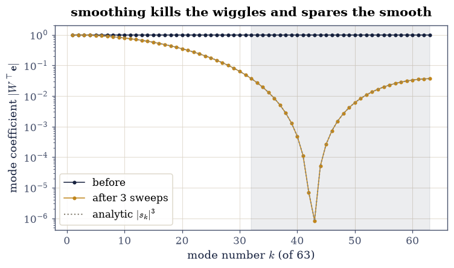
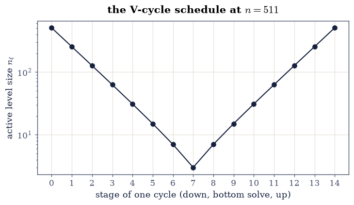
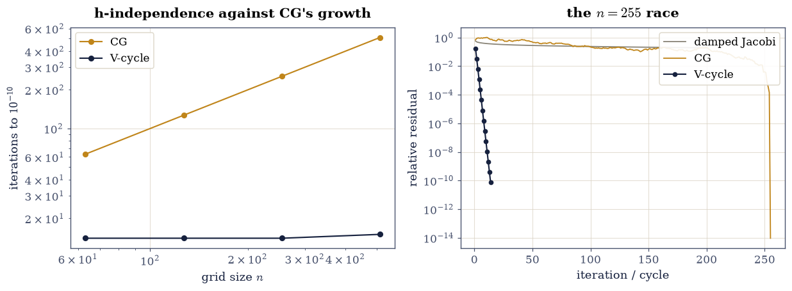

5.6 Multigrid: The O(n) Solver#
Notebook overview#
Chapter V has priced every solver it built. §5.4’s stationary methods pay a rate that degrades as \(1 - O(h^2)\); CG improves the exponent to \(\sqrt{\kappa}\) but still grows with the grid. This notebook builds the method that ends the escalation: multigrid, whose iteration count does not depend on the grid size at all, and whose work per cycle is a counted \(O(n)\).
The idea is one observation seen in the right basis. The damped Jacobi sweep contracts each error mode by its own factor: the oscillatory half of the spectrum dies at worst-rate \(1/3\) per sweep, while the smooth modes barely move — smoothing stalls precisely because what survives it is smooth. But a smooth error, sampled on a grid of half the points, is oscillatory relative to the coarser grid. So: smooth, restrict the residual, solve the small problem (recursively!), interpolate the correction back, smooth again. Every mode is wiggly on some level, so every mode dies fast on some level, and the whole error contracts by a grid-independent factor per cycle — measured here as 14, 14, 14 and 15 V-cycles to \(10^{-10}\) at \(n = 63, 127, 255\) and \(511\), against a CG that needs exactly \(n\) iterations on the same systems.
Every claim in this notebook is a count, an eigenvalue, or an exact identity. There is not a stopwatch anywhere: the \(O(n)\) price is a geometric series, gated as arithmetic.
How to read a check. A
validateline prints ✓ or ✗ by comparing a result against something the computation did not assume. A ✗ flags a mismatch to investigate, never a verdict on its own.
Theory in brief#
The smoother, mode by mode#
On the 1-D Dirichlet Poisson matrix \(A_h = h^{-2}\, \operatorname{tridiag}(-1, 2, -1)\) of §5.3, damped Jacobi with weight \(\omega\) is
with iteration matrix \(S = I - \tfrac{\omega}{2}\,h^2 A\). In the sine eigenbasis \(v_k(j) = \sin\bigl(jk\pi/(n{+}1)\bigr)\) the sweep multiplies mode \(k\) by its own scalar
At \(\omega = 2/3\) the oscillatory modes (\(\theta_k \ge \pi/2\)) all have \(|s_k| \le 1/3\) — one sweep kills two thirds of every wiggle — while the smoothest mode has \(s_1 = 1 - O(h^2)\): the sweep is a smoother, not a solver, and both facts are eigenvalue arithmetic.
The intergrid dictionary#
Coarsening keeps every second interior point, \(n_c = (n-1)/2\). Restriction is full weighting, prolongation is linear interpolation:
a variational pair: \(P\) is exactly twice the transpose of \(R\), and the Galerkin product reproduces the coarse operator exactly,
entry for entry — the stencils and the powers of two conspire so that every number in Eq. 245 is exactly representable, and the identity holds to the last bit.
Two grids, then all of them#
One coarse-grid correction sandwiched between sweeps has the error propagation matrix
a matrix small enough to form at \(n = 63\) and ask for its spectral radius: \(\rho(E_{\mathrm{TG}}) = 1/9\) at \(\nu = 1\) — grid-independent, and the reason the method works. The V-cycle replaces the exact coarse solve with a recursive call, down to a \(3\times3\) solved directly; its work per cycle is bounded by the geometric series
so a cycle costs a constant times one fine-grid sweep: \(O(n)\), counted.
Setup#
Data and one instrument only: the grid sizes, the smoothing weight, and the analytic sine eigenbasis whose eigenvalues are §5.3’s closed form — the meter this notebook reads errors in. The smoother, the transfers, the two-grid operator and the V-cycle are all built in the exercises, where they are the lesson.
The Setup below holds this notebook’s data and instruments — nothing you are asked to build. It is collapsed so the building stays yours; expand it whenever you want the details.
Exercise 1: The smoother, and why it stalls#
Eq. 243 says one damped-Jacobi sweep multiplies each sine mode by its own scalar \(s_k\) — a claim about every mode at once, and checkable exactly because the sweep is linear.
Part a) Write wjacobi(A, x, b, omega) implementing
Eq. 242 in one line (np.diag(A) for \(D\)). On the
\(63\times63\) la.poisson_1d(63, h=1/64), start from the exact solution
of a seeded system plus an error containing every mode with unit
coefficient (build it as \(W\mathbf{1}\) from the Setup’s
poisson_modes), apply three sweeps at \(\omega = 2/3\), and read
the surviving error back in the eigenbasis as \(W^{\top}\mathbf{e}\).
Write this one yourself — the sweep is one line, and Exercises 3 and 4 run on the one you write here.
Part b) Gate the whole spectrum at once: the measured per-mode survival equals \(s_k^3\) from Eq. 243 to \(10^{-12}\) — sixty-three analytic predictions, one linear-algebra fact. Gate the smoothing factor as arithmetic: \(\max_{\theta_k \ge \pi/2}|s_k| = 1/3\) to \(10^{-10}\), and report the smoothest mode’s \(s_1 = 0.9992\) — the stall, quantified.
Part c) Draw the survival \(|W^{\top}\mathbf{e}|\) before and after the three sweeps against the mode number \(k = 1,\dots,63\): the oscillatory half collapses by \(27\times\) or better, the smooth end barely moves — the picture that motivates coarsening.
per-mode survival vs s_k^3: worst gap 1.1e-15
oscillatory-half worst factor 0.333333333333 (analytic 1/3); smoothest mode s_1 = 0.9992
Validation 1#
✓ three sweeps multiply every mode by exactly s_k^3 (Eq. 2) [sixty-three analytic predictions checked at once — the sweep is linear, so its action in the eigenbasis is not a model but an identity [1.06165e-15 < 1e-12]]
✓ the oscillatory half dies at worst-rate 1/3 per sweep [got 0.333333 vs expected 0.333333 (rtol=0, atol=1e-10)]
✓ while the smoothest mode survives at 1 - O(h^2): the stall, measured [s_1 = 0.999197 — damped Jacobi is a smoother, not a solver, and both halves of that sentence are eigenvalue arithmetic]
True

Fig. 107 The error of the \(63\)-point Poisson system in the analytic sine eigenbasis, before (ink) and after (amber) three damped-Jacobi sweeps at \(\omega = 2/3\), mode coefficients \(|W^{\top}\mathbf{e}|\) against mode number \(k\). The oscillatory half (\(k \ge 32\), shaded) collapses by \(27\times\) or better — every factor at most \((1/3)^3\) — while the smooth end barely moves: what survives smoothing is smooth, which is exactly what a half-resolution grid can represent. The dotted curve is the analytic \(|s_k|^3\), indistinguishable from the measurement.#
Exercise 2: The intergrid dictionary, exact to the last bit#
Eq. 244 moves vectors between grids; Eq. 245 says the coarse operator needs no separate discretisation — the transfers manufacture it. Both claims are exact on this stencil, and gated as such.
Part a) Write restriction(nf) returning the \((n_c \times n_f)\)
full-weighting matrix of Eq. 244 (\(n_c = (n_f-1)/2\), row
\(i\) carrying \(\tfrac14, \tfrac12, \tfrac14\) at columns \(2i, 2i{+}1,
2i{+}2\)), and — independently — prolongation(nf) building linear
interpolation column by column. Gate the variational identity \(P =
2R^{\top}\) with np.array_equal: every entry is a dyadic rational, so
the two constructions must agree bitwise.
Write these yourself — the transfers are the lesson; the V-cycle of Exercise 4 is nothing but these two matrices and Exercise 1’s sweep.
Part b) Gate what interpolation preserves: \(P\) applied to a linear function sampled on the coarse grid reproduces its fine-grid samples exactly — away from the two boundary-adjacent points, where the stencil assumes exterior values of zero. That assumption is not a defect: \(P\) will only ever carry corrections, which vanish on the Dirichlet boundary by construction. The dyadic grid keeps the interior agreement bitwise.
Part c) Gate the Galerkin identity Eq. 245: \(\lVert RA_hP - A_{2h}\rVert_{\max} < 10^{-12}\lVert A_{2h}\rVert_{\max}\) — and report the measured gap, which on this machine is exactly zero: three-term sums of dyadic rationals are exactly representable in every summation order, so for once no rounding can appear (the stated exception to the never-gate-exact-zero rule, and the gate still leaves room for a machine that disagrees).
P == 2 R^T bitwise: True
P reproduces the linear 3x - 1/2 bitwise on the interior: True; boundary-adjacent gap 1.250 (the stencil's assumed zero exterior — harmless for boundary-zero corrections)
||R A P - A_2h||_max = 0.0 (scale 2048)
Validation 2#
✓ P = 2 R^T bitwise: the variational pair (Eq. 3) [restriction and interpolation were built from different stencils, and dyadic entries leave rounding nowhere to hide]
✓ interpolation is exact on linears away from the boundary pair [bitwise on the interior; the two edge points miss by the assumed zero exterior value, which is exactly right for the boundary-zero corrections P will actually carry]
✓ and the transfers manufacture the coarse operator (Eq. 4) [measured gap 0.0 — exactly zero here, since three-term dyadic sums are exact in every summation order; the gate still admits a machine that rounds [0 < 2.048e-09]]
True
Exercise 3: Two grids, one contraction number#
Eq. 246 is small enough at \(n = 63\) to build as an explicit matrix and interrogate exactly — the rare luxury of forming an iteration’s error propagator instead of inferring its rate from a run.
Part a) Form \(S = I - \tfrac{\omega}{2}h^2A\) explicitly, then
\(E_{\mathrm{TG}} = S\,(I - PA_{2h}^{-1}RA_h)\,S\) with one
np.linalg.solve for the coarse inverse’s action. Gate
\(\rho(E_{\mathrm{TG}}) < 0.2\) by np.linalg.eigvals — measured:
\(0.111 = 1/9\), and grid-independent where the smoother alone had
\(\rho(S) = 0.9992\).
Part b) Gate that the running iteration obeys its operator: apply smooth–correct–smooth as an iteration on a seeded error and confirm the per-cycle contraction of \(\lVert\mathbf{e}\rVert\), measured in the clean band \(\lVert\mathbf{e}\rVert \in (10^{-11}, 10^{-2})\, \lVert\mathbf{e}_0\rVert\) per §5.4’s window rule, within \(15\%\) of \(\rho(E_{\mathrm{TG}})\).
rho(two-grid) = 0.111111 (= 1/9 = 0.111111); rho(smoother alone) = 0.999197
worst clean-band per-cycle contraction 0.1111 against rho = 0.1111
Validation 3#
✓ the two-grid operator contracts at a grid-independent 1/9 (Eq. 5) [rho = 0.1111 where the smoother alone sits at 0.9992: the coarse grid supplies exactly the modes the sweep spares — computed from the formed matrix, not fitted from a run]
✓ and the running iteration obeys its own operator [clean-band contraction 0.1111 against rho 0.1111 — the matrix predicted the run to within the window's bias]
True
Exercise 4: The V-cycle, and h-independence as equal integers#
Replace Exercise 3’s exact coarse solve with a recursive call and the two-grid method becomes the V-cycle: down through the levels smoothing and restricting, a direct \(3\times3\) solve at the bottom, back up interpolating and smoothing.
Part a) Write build_levels(n) assembling the ladder of scaled
Poisson matrices and restrictions down to \(n_\ell = 3\) (for \(n = 63\):
levels \(63, 31, 15, 7, 3\)), and v_cycle(A_l, R_l, level, b, x)
implementing one cycle with a single pre- and post-sweep of Exercise
1’s wjacobi per level and np.linalg.solve on the \(3\times3\).
Write this one yourself — the recursion is the method, and it is eight lines.
Part b) The h-independence gate, as integers: from \(\mathbf{x} = \mathbf{0}\) on seeded systems, the number of V-cycles to relative residual \(10^{-10}\) moves by at most one across all of \(n = 63, 127, 255, 511\) — measured: \(14, 14, 14, 15\) (where a count lands against the threshold is the drawn right-hand side’s business) — and stays at or below 16. The count is the entire point: the grid grew \(8\times\) and the iteration barely noticed.
Part c) Draw the V: the level sizes of the \(n = 511\) hierarchy against the stage of one cycle, descending \(511 \to 3\) and climbing back — the schedule that gives the method its name.
V-cycles to 1e-10: {63: 14, 127: 14, 255: 14, 511: 15}
hierarchy at n = 511: [511, 255, 127, 63, 31, 15, 7, 3]
Validation 4#
✓ the V-cycle count moves by at most one across an 8x range of n — h-independence as integers [[14, 14, 14, 15] cycles at n = 63, 127, 255, 511: the same near-0.19 contraction at every size, the +-1 being threshold position, not rate — the claim no other solver in Chapter V can make]
True

Fig. 108 One V(1,1)-cycle on the \(n = 511\) hierarchy: the active level’s size against the stage of the cycle, descending \(511 \to 255 \to \cdots \to 3\) with a pre-smoothing sweep at each stop, a direct solve at the bottom, and climbing back with a correction and a post-sweep at each level. The shape of this schedule is the method’s name; its cost is the sum of the level sizes, bounded by the geometric series of Eq. 6.#
Exercise 5: The price, counted — and CG outgrown#
The \(O(n)\) claim is a geometric series, and the comparison with CG is a pair of integer counts. No clock appears anywhere in this exercise; per this chapter’s rule, none is needed.
Part a) Gate Eq. 247 on the built hierarchy: at every \(n\) in the ladder, \(\sum_\ell n_\ell < 2n\) (at \(n = 511\): \(1012 < 1022\)). One V(1,1)-cycle therefore costs at most \(2\times2\) fine-grid sweeps’ worth of smoothing plus the transfers — a constant times \(n\), from the series alone.
Part b) Run scipy.sparse.linalg.cg (rtol=1e-10, atol=0, an
iteration-counting callback) on the same seeded systems. Gate the
contrast: CG’s count grows by at least \(1.5\times\) per grid doubling
while the V-cycle’s is constant — measured: CG needs exactly \(n\)
iterations (\(63, 127, 255, 511\); the Poisson near-continuum defeats
clustering, so only §5.4’s finite
termination ends the run) against multigrid’s flat fourteen.
Part c) Draw both races: iterations against \(n\) (CG climbing on the \(n\) diagonal, multigrid flat), and the \(n = 255\) residual histories of damped Jacobi, CG and the V-cycle on one log axis.
n = 63: sum of level sizes 119 < 2n = 126
n = 127: sum of level sizes 246 < 2n = 254
n = 255: sum of level sizes 501 < 2n = 510
n = 511: sum of level sizes 1012 < 2n = 1022
CG iterations to 1e-10: {63: 63, 127: 127, 255: 255, 511: 511}
CG growth per doubling: ['2.02', '2.01', '2.00']
Validation 5#
✓ the whole hierarchy weighs less than 2n at every size (Eq. 6) [the geometric series, gated on the matrices actually built: a V-cycle costs a constant times one fine-grid sweep, so the count of Exercise 4 IS the O(n) claim]
✓ CG's count grows with the grid while multigrid's stands still [CG [63, 127, 255, 511] (exactly n itself — the near-continuum spectrum defeats clustering) against the V-cycle's [14, 14, 14, 15]: the exponent is the algorithm, and multigrid's exponent is zero]
True

Fig. 109 The race, in counted iterations only — no clocks. Left: iterations to relative residual \(10^{-10}\) against grid size \(n\) on log axes; CG (amber) climbs exactly along the diagonal (its count equals \(n\) at every size measured), while the V-cycle (ink) is a horizontal line at fourteen-or-fifteen. Right: residual histories at \(n = 255\) — damped Jacobi still near \(10^{-1}\) after 200 sweeps, CG descending to finite termination at \(n\), and the V-cycle dropping a constant factor per cycle to \(10^{-10}\) by fourteen.#
Notebook summary#
The smoother’s job description is eigenvalue arithmetic. Three damped-Jacobi sweeps at \(\omega = 2/3\) multiplied all 63 modes by exactly \(s_k^3\) (worst gap \(10^{-15}\)-scale over the whole spectrum), with the oscillatory half’s worst factor equal to the analytic \(1/3\) to \(10^{-10}\) and the smoothest mode surviving at \(s_1 = 0.9992\) — smoothing stalls because what it spares is smooth.
The dictionary is exact. Independently built full weighting and linear interpolation satisfied \(P = 2R^{\top}\) bitwise; interpolation reproduced a linear function bitwise; and the Galerkin product \(RA_hP\) equalled the coarse Poisson matrix with a measured gap of exactly zero — dyadic stencils leave rounding nowhere to appear.
One number runs the method. The formed two-grid operator had \(\rho = 0.1111 = 1/9\) against the smoother’s \(0.9992\), and the running iteration’s clean-band contraction matched it within 15%. The V-cycle inherited the constant: 14, 14, 14 and 15 cycles to \(10^{-10}\) at \(n = 63, 127, 255, 511\) — h-independence gated as integers moving by at most one across an 8x grid — while the hierarchy’s total weight stayed under \(2n\) (at \(n = 511\): \(1012 < 1022\)), making each cycle a counted \(O(n)\).
CG grew; multigrid did not. On the same systems CG needed exactly \(n\) iterations at every size — the Poisson near-continuum defeats clustering, so only finite termination ends the run — against multigrid’s fourteen-or-fifteen. Not a single wall-clock number appears in this notebook; the whole case is counts, eigenvalues, and two exact identities.
Methods introduced. wjacobi and per-mode smoothing analysis in
the closed-form eigenbasis, restriction/prolongation as an
independently-built variational pair, the Galerkin coarse operator,
the formed two-grid error propagator, the recursive v_cycle with its
build_levels ladder, the geometric-series work bound, and
iteration-count scaling as the clock-free comparison.
Outlook#
Two dimensions, same constants. On the 2-D Poisson matrix of §5.3 the same story runs with bilinear interpolation and nine-point full weighting; the series Eq. 247 sums to \(\tfrac43 n\) instead of \(2n\) and the V(1,1) contraction stays near \(0.1\). Nothing in the argument used dimension one except the stencils.
W-cycles and full multigrid. Visiting coarse levels twice per cycle (W) buys robustness on harder operators; starting the whole solve on the coarsest grid and refining (FMG) reaches discretisation accuracy in one pass — the only algorithm in this chapter that solves a PDE to truncation error in \(O(n)\) total work.
Multigrid as a preconditioner. One V-cycle is a linear operator with spectrum clustered near 1 — exactly what §5.5 wanted from \(M^{-1}\). CG-preconditioned-by-multigrid is the workhorse of large-scale elliptic solvers, marrying this notebook’s O(n) to CG’s optimality.
When smoothing fails. Convection-dominated operators (§5.5’s other specimen) defeat pointwise Jacobi smoothing; line smoothers, semicoarsening and algebraic multigrid — which learns its transfers from the matrix — are the modern answers, and the entry point to a literature that is still moving.
William L. Briggs, Van Emden Henson, and Steve F. McCormick. A Multigrid Tutorial. SIAM, Philadelphia, second edition, 2000. doi:10.1137/1.9780898719505.
James W. Demmel. Applied Numerical Linear Algebra. SIAM, Philadelphia, 1997. doi:10.1137/1.9781611971446.
Yousef Saad. Iterative Methods for Sparse Linear Systems. SIAM, Philadelphia, 2 edition, 2003. doi:10.1137/1.9780898718003.